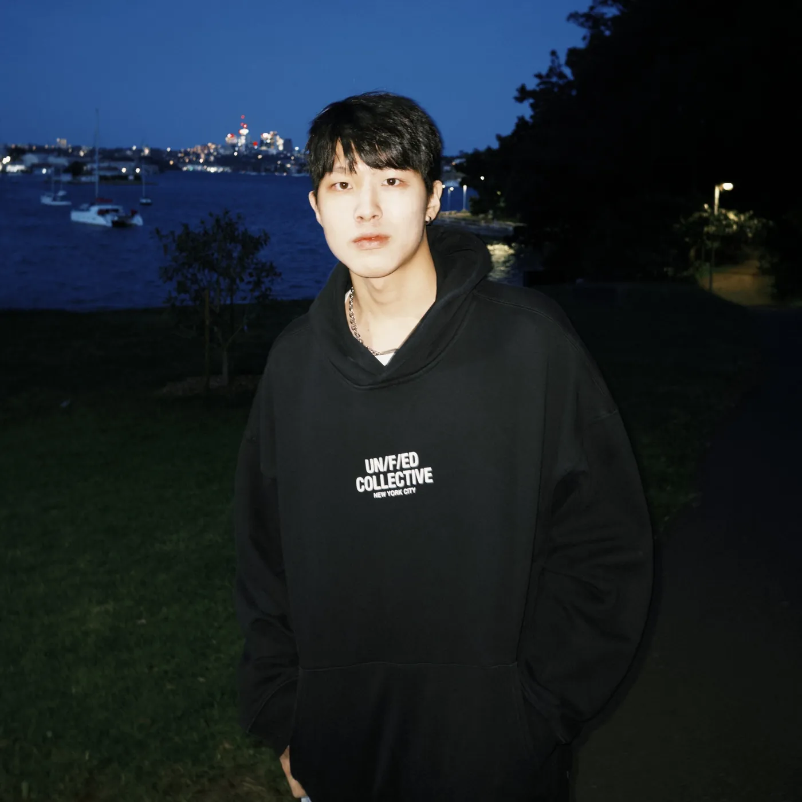

Frank Wu
As a junior UI/UX designer and recent University of Sydney graduate (Bachelor of Design Computing), my goal is to craft simple, thoughtful solutions that merge technology into one's daily life.
I believe that the best technology is invisible—it simply allows us to complete our daily tasks more seamlessly and intuitively. I focus on transforming complex problems into effortless routines.
My past experience as an English instructor and editor informs this approach, giving me a strong foundation in empathetic communication and clarity. I apply this clarity to design, ensuring every interaction is precise, simple, and immediately understandable.
Experience
- Nitori TaiwanE-commerce feature pages
2025 to now - Let's Talk in EnglishEditor & content creator
2023 to 2026
Education
- University of SydneyBachelor of Design Computing
2020 to 2024
Skills
- UI/UX Design
- Prototyping
- User Research
- Wireframing
- Figma
- Design Systems
- Responsive Design
- User Testing
Languages
- Chinese
- English
